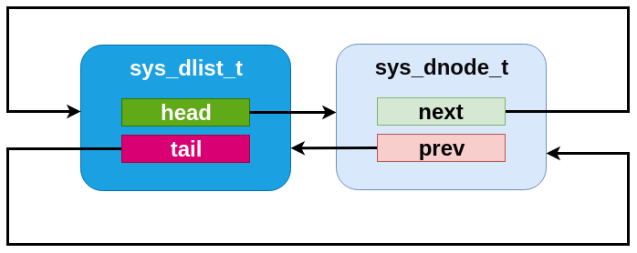

双向链表
Zephyr 还包含一个双向链表实现，它在许多方面与单向链表类似。对于所有现有的 slist 操作，它提供相同的算法特性，同时还支持常数时间的删除和插入（可在任意位置进行：头部、尾部或任意内部节点之前或之后）。为此，链表的每个节点要保存两个指针，因此运行时代码量和内存空间需求会略高一些。
用户可以在任何可访问的内存中实例化 sys_dlist_t 结构体。使用前必须通过 sys_dlist_init() 或 SYS_DLIST_STATIC_INIT 进行初始化。对于添加到链表中的任何节点，sys_dnode_t 结构体应由用户提供（通常如上文所述，嵌入在要跟踪的结构体中）。使用前必须将其置于已清零的内存/bss 中，或通过 sys_dnode_init() 进行初始化。
基本操作可以通过 sys_dlist_peek_head()、sys_dlist_peek_tail()、sys_dlist_peek_next() 和 sys_dlist_peek_prev() 获取链表的头/尾以及节点的 next/prev 指针。在适当的情况下（即对于空链表或位于链表端点的节点），这些函数都可能返回 NULL。
可以在常数时间内修改 dlist：使用 sys_dlist_remove() 删除节点，使用 sys_dlist_prepend() 和 sys_dlist_append() 将节点添加到链表头部或尾部，或使用 sys_dlist_insert() 在现有节点之前插入节点。
与 slist 一样，可以使用 SYS_DLIST_FOR_EACH_NODE 以自然的代码块风格处理 dlist 中的每个节点。该宏还有以下几种形式：“FROM_NODE” 形式允许从已知的起点开始迭代；“SAFE” 变体允许在代码块内删除正在检查的节点；“CONTAINER” 形式提供指向外层结构体的指针，而不是原始节点；“CONTAINER_SAFE” 变体则同时具备这两种特性。
dlist 提供的便捷工具包括 sys_dlist_insert_at() 和 sys_dnode_is_linked()。前者通过线性搜索链表来找到正确的插入点并插入节点，插入点的判断由用户以 C 回调函数指针的形式提供；后者明确返回某个节点当前是否已链入某个 dlist（其实现相比常规的链表处理没有任何额外开销）。
双向链表内部实现
在内部，dlist 的实现非常精简：sys_dlist_t 结构体包含 “head” 和 “tail” 指针字段，sys_dnode_t 包含 “prev” 和 “next” 指针，除此之外不保存任何数据。但实际上这两个结构体在内部是完全相同的，链表结构体本身也作为一个节点插入到链表中。这使得各种操作具有非常整洁的对称性：
空链表的链表结构体中的反向指针指向其自身，这一点很容易检测。
通过将节点的 prev/next 指针与链表结构体的地址进行比较，即可检测链表的头和尾。
插入或删除操作永远不需要检查在头部或尾部插入这类特殊情况。链表中永远不存在需要规避的 NULL 指针。所有链表修改原语执行的操作完全相同，没有任何判断或分支。
实际上，可以将包含 N 个节点的 dlist 看作由 “N+1” 个节点组成的“环”，其中一个节点代表链表跟踪结构体。



双向链表 API 参考
- doubly-linked-list_apis